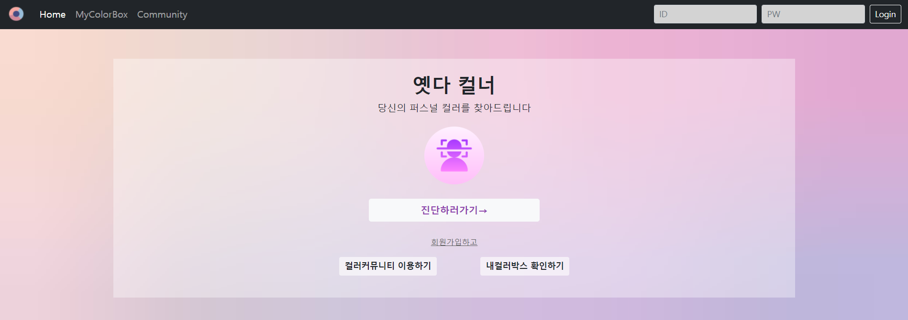

<section class="hero is-fullheight has-text-centered has-background-white" id="project1"
         xmlns="http://www.w3.org/1999/html">
    <div class="hero-body">

        <div class="container">
            <p style="text-align: center"><h2>PROJECT</h2></p>
            <div class="columns">
                <div class="column is-one-fifth-desktop is-one-fifth-tablet is-one-fifth-fullhd">
                    <figure class="image">
                        
                    </figure>
                </div>
                <div class="column has-text-right-desktop has-text-right-tablet has-text-right-fullhd has-text-right-widescreen">
                    <p style="text-align: center">온 오프 연계 AI 활용 서비스 개발 (6명)</p>
                    <p style="text-align: center">기여도 = 16%</p>
                    <br>
                    <p style="text-align: right">
                        국비지원으로 진행한 멀티캠퍼스 AI활용 웹 서비스 개발 수업을 참여해서 진행한 프로젝트입니다.
                        시중에 나와있는 기능을 배우면서 AI를 활용하여 색다른 서비스를 제공하는 프로젝트를 개발하게 되었습니다.
                        처음 배우는 개발과 첫 프로젝트여서 긴장되었지만, 설렘이 더 컸던 프로젝트였습니다.
                        해당 프로젝트에서 퍼스널컬러 진단 결과를 바탕으로 패션아이템을 추천하는 기능을 전담했습니다.
                        DB부터 출력까지 모든 기능을 만들었으며, 이미지는 경로를 DB에 저장하고 소스파일은 서버에 따로 저장해서 성능을 높였습니다.
                        AWS를 활용해 배포를 진행하였습니다.
                    </p>
                    <br>
                    <p style="text-align: center">Back-End: Java,Jquery,Mysql,MariaDB</p>
                    <br>
                    <p style="text-align: center">Front-End: Html,JavaScript,CSS</p>
                    <br>
                    <p style="text-align: center"> Git&GitHub,AWS,Docker</p>
                    <br>
                    </p style="text-align: center">
                        <a href="https://github.com/Leesuhyeon97/AI_Project-1">Project in GitHub</a>
                        <a href="http://15.165.160.136:8080/?#">Project Site</a>
                    </p>
                    <div class="container columns is-centered"></div>
                </div>
            </div>
        </div>
    </div>
</section>